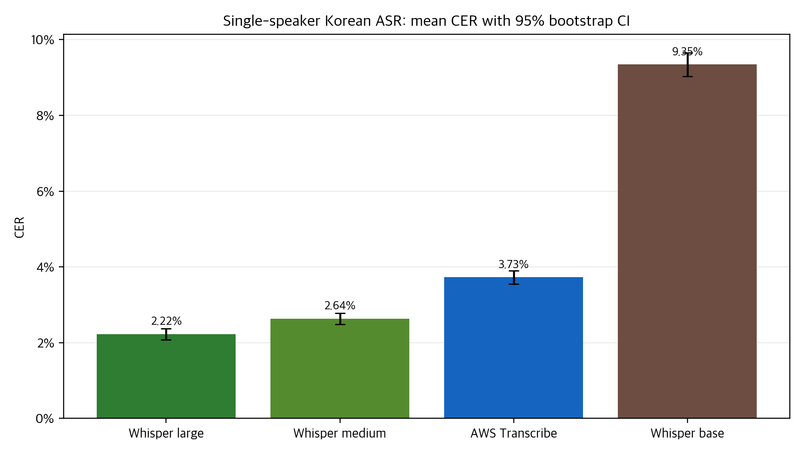
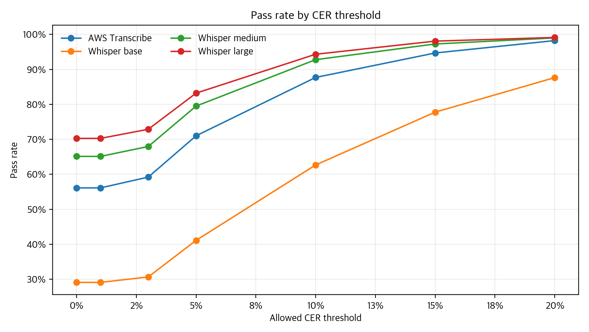
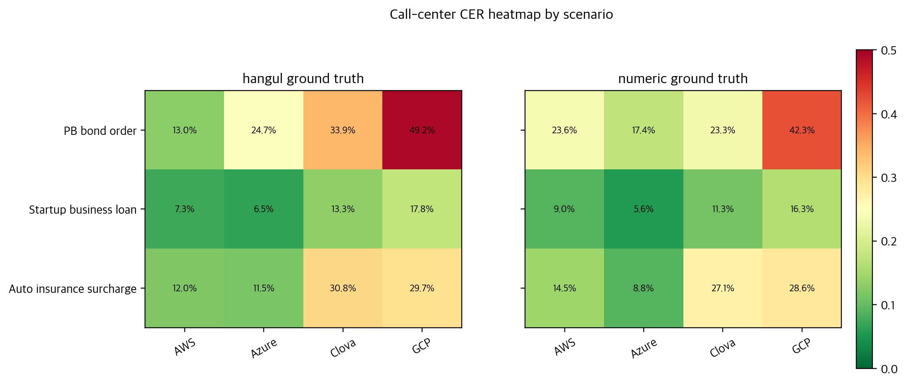

3,922문장과 3개 콜센터 시나리오로 본 한국어 STT 성능
2023년에 직접 설계하고 수행했던 공개 제품/공개 모델 기반 한국어 ASR 실험을 실제 레포 데이터로 다시 분석했다. 평균 CER, threshold 통과율, paired comparison, worst case, 콜센터 시나리오 차이를 함께 읽는다.
Model Performance Explorer
CER threshold를 바꾸면서 모델별 pass/fail 비율이 어떻게 움직이는지 확인한다. Call-center 모드에서는 provider와 정답지 기준별 scenario pass 비중을 본다.
Pass rate by model
CER <= 5% 기준
Static Charts
모든 그림은 레포 결과 파일에서 재생성된다. Call-center 차트는 n=3 case summary로만 읽는다.



Reproducibility
분석은 기존 결과 CSV의 cer 값을 그대로 사용한다. 블로그 재분석 단계에서
공백, 문장부호, 영문 대소문자, 숫자를 새로 정규화해 재계산하지 않는다.
uv run --python /usr/bin/python3 --with pandas --with numpy --with matplotlib python analysis/analyze_asr_benchmarks.py- 단일 화자 4개 결과 CSV의
file_name집합 일치 검증 - 콜센터 결과 row count와 scenario count 일치 검증
- D3용 JSON은
blog/interactive/data/asr-benchmark.json으로 재생성
Limits
이 분석은 2023년 당시 데이터셋, 공개 모델/서비스 상태, 평가 스크립트에 묶여 있다.
현재 제품 성능, SLA, vendor capability, procurement decision을 대표하지 않는다.
단일 화자 3,922건은 같은 화자/녹음 조건 안에서의 비교다.
콜센터 데이터는 3개 시나리오의 case analysis이며 provider ranking 근거로 쓰지 않는다.
CER는 의미 보존, 화자 분리, 타임스탬프, punctuation quality를 직접 평가하지 않는다.